A software factory, built and run
A software factory is a written route that every piece of work follows. Agents do each stop the same way every time, scripts check the result, and people approve at the gates. This page shows one being created, running in the background, and stopping for a person, on real repositories.
A factory, for software
A software factory is a written route that every piece of work follows. Agents do each stop the same way every time, scripts check the result, and people approve at the gates. It is the difference between asking an assistant to write some code and running a process you can trust, repeat, and inspect.
Six words to know
Six words describe the whole thing. A route is the list of stops work passes through. A stop is one job, done by an agent or a script. A skill is how a stop is done, written down once. A gate is where the work waits for a person. Evidence is the proof a stop passed. The background job picks up new work and keeps it moving.
Build one in two minutes
Each repository gets its own factory, made in the editor. These frames are the real thing being created: a fast lane for bug reports on the API repository. Name it, point it at the repository, pick a starting point, say which label triggers it, and switch it on.
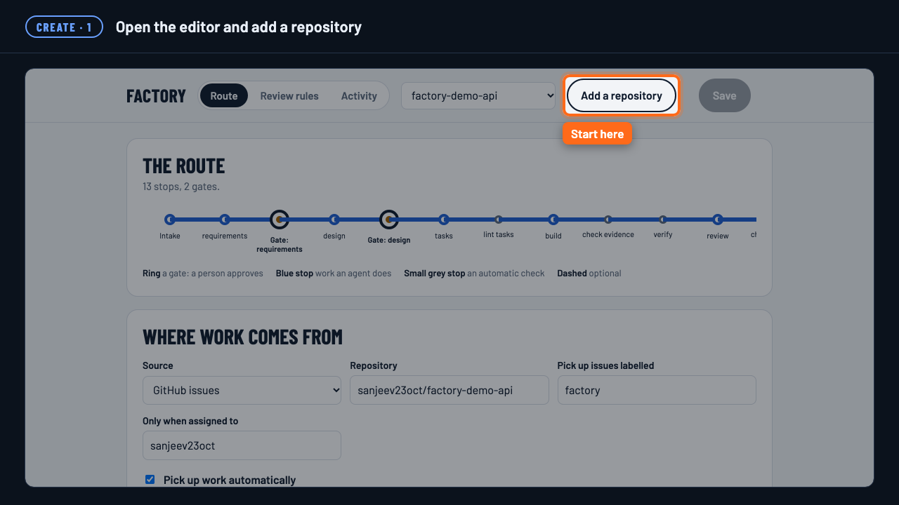
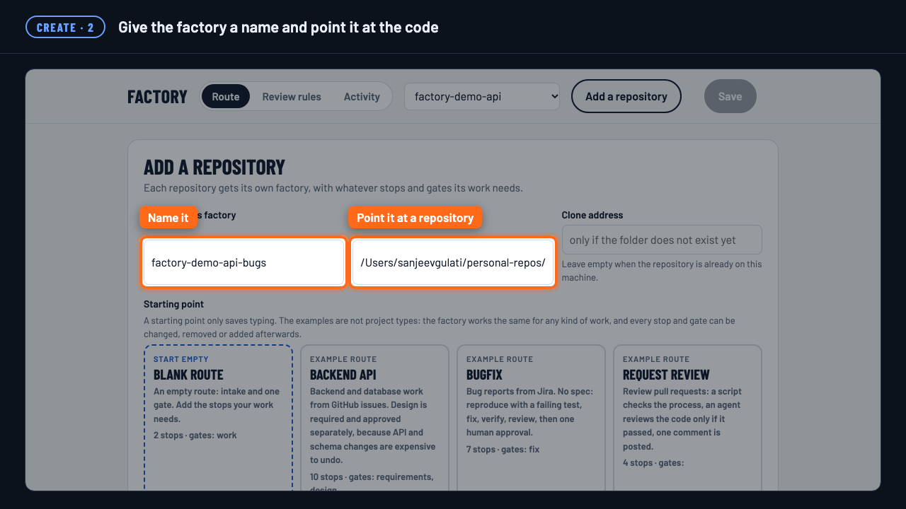
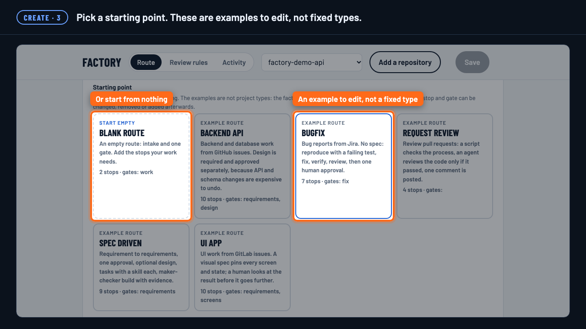

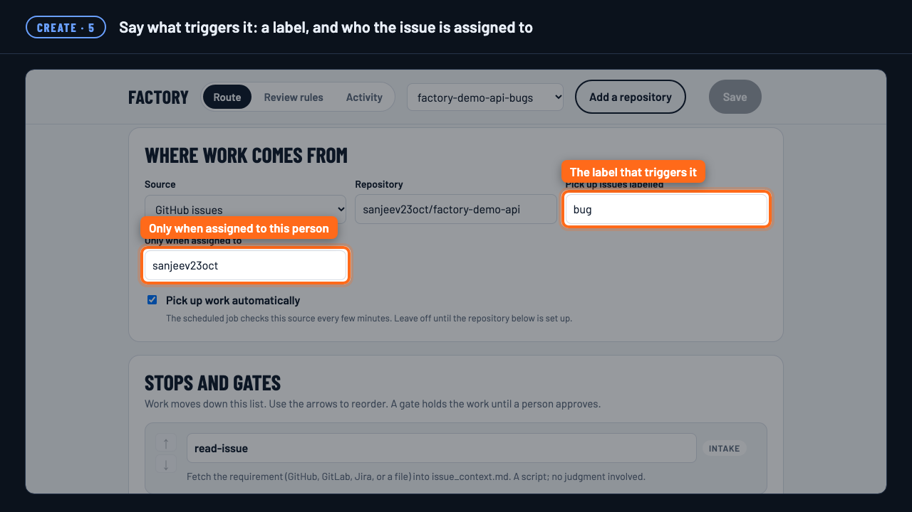

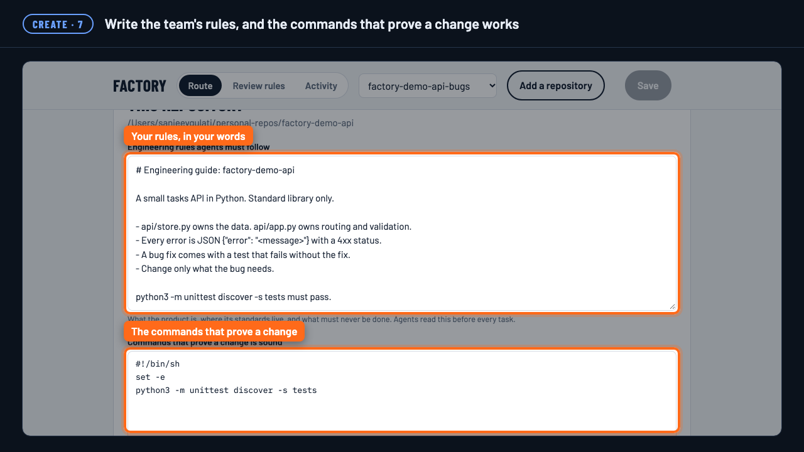

python3 factory/editor.pyClick Add a repository. Every field you see in these frames is on that page.
Nobody starts it
Once a factory is switched on, a background job checks its tracker every ten minutes. Nobody types a command. Here a bug was filed on GitHub with the label and the assignee the factory watches for. The next pass picked it up, and within three minutes agents had reproduced the bug with a failing test, fixed it, run the tests and reviewed the fix.
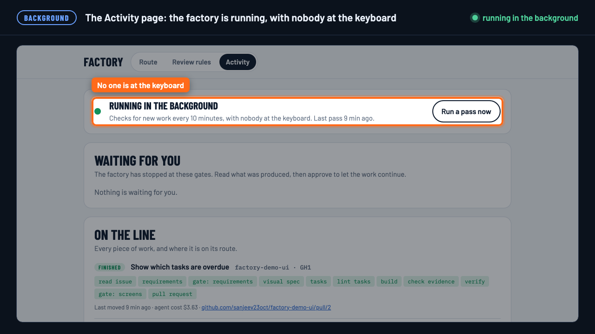


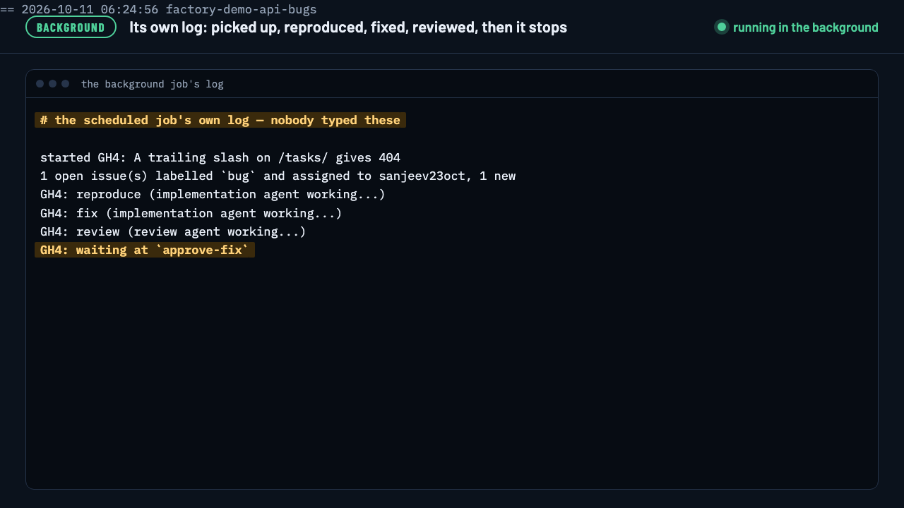
python3 factory/scripts/schedule.py install --every 10 python3 factory/scripts/schedule.py status
The gate holds
At a gate the factory stops, however long it takes. The Activity page shows what is waiting and the documents the agents wrote, so the person approving can read exactly what they are agreeing to. One click approves. The background job then finishes the route and opens a pull request. Merging is still a person's decision.

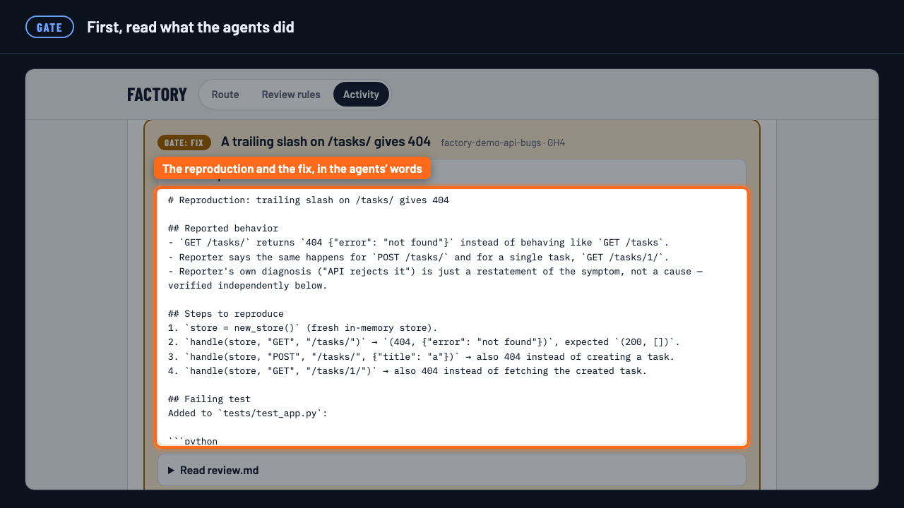

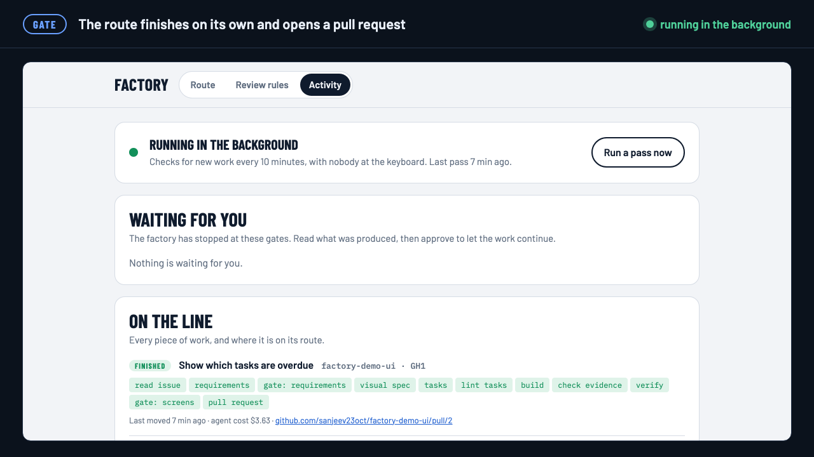

python3 factory/flow.py --target factory-demo-api-bugs approve GH4
Features take more stops
A bug needs a short route. A feature needs a longer one, and the factory is the same. On the API repository, design is required and there are two gates before any code, because API changes are costly to undo. On the UI repository the gate is at the end, where a person looks at the screens. A route is whatever your work needs.

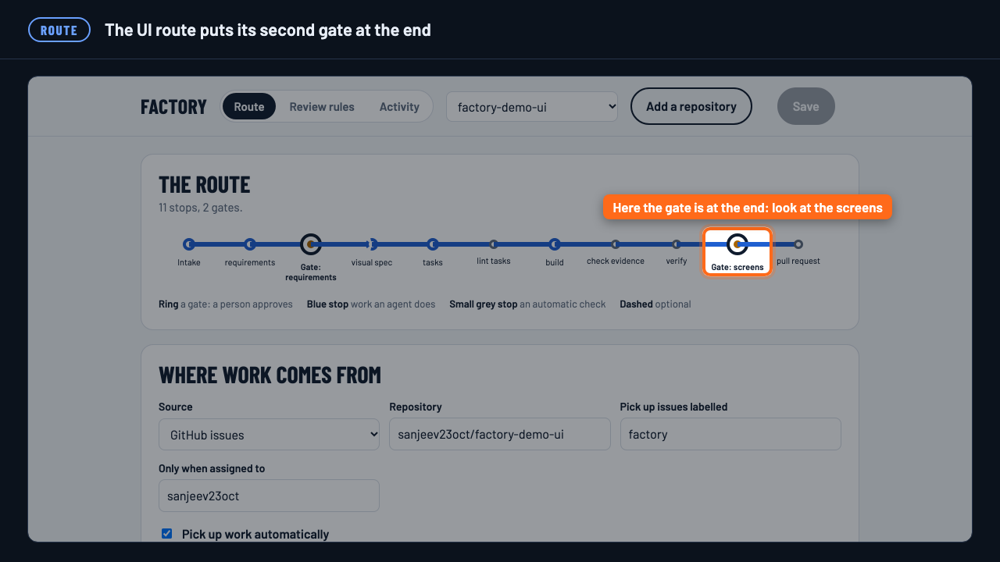


Done means proven
The work is split into small tasks and every task names the skill that builds it; a script rejects a task list where one does not. A maker agent builds each task. A separate checker runs the gate and writes an evidence sheet of what was expected against what was found. Then the factory's own script re-runs those checks and the tests. Work ticked without evidence is sent back automatically.


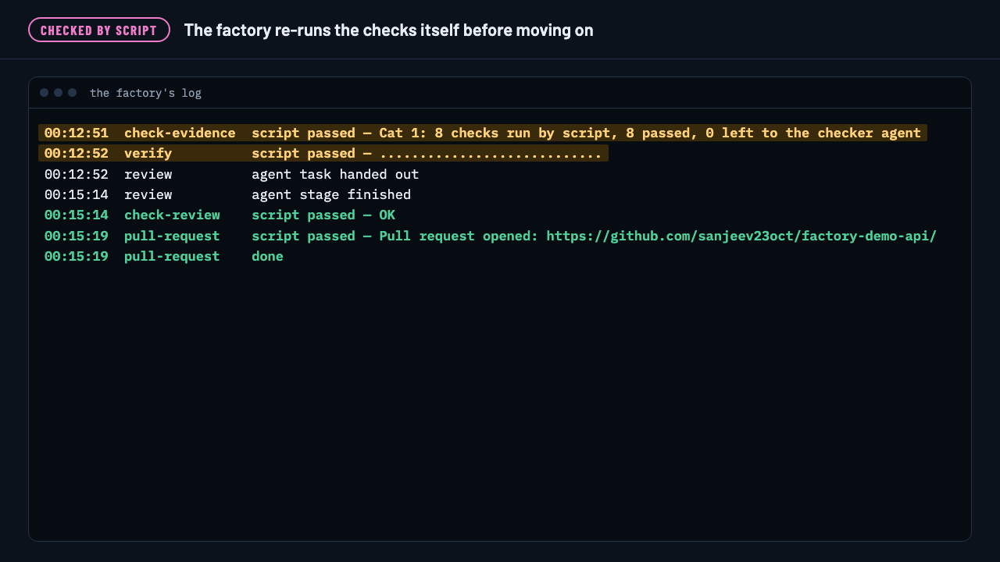

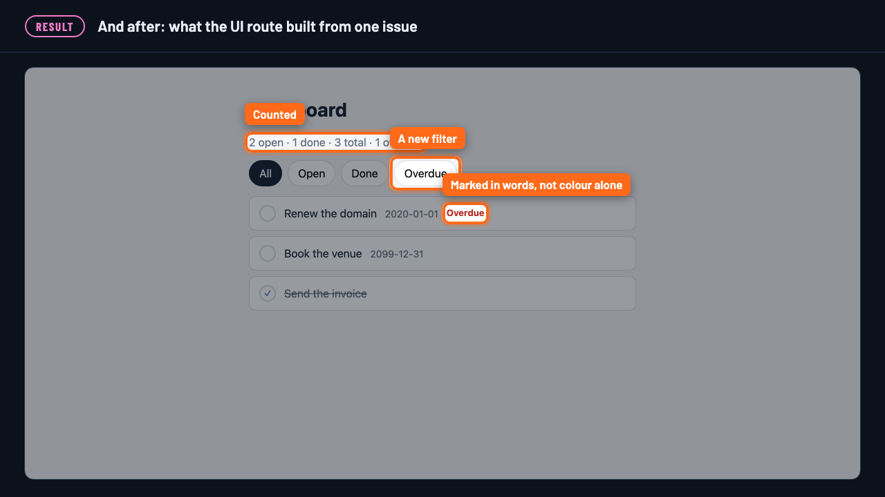

No process, no review
A review route checks pull requests, whoever wrote them. A script goes first: is there a spec, does every task name a skill, is there evidence, did the tests change with the code, plus the team's own rules. A quick hack added by hand, with no spec and no test, was stopped by the script and cost nothing. The request the factory built passed all 11 checks, and only then did an agent review the code.
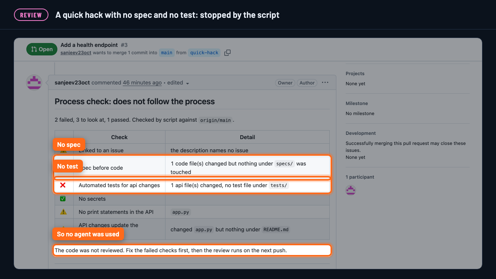

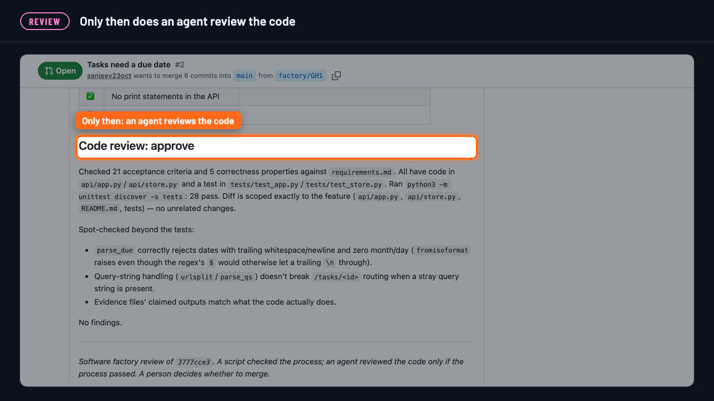

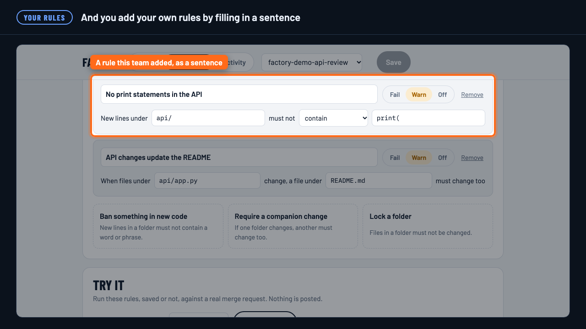
factory-review. Set the rules in the Review rules tab.Three issues in, three pull requests out
Three issues became three open pull requests across two repositories, each backed by a spec or a reproduction, evidence, and passing tests. A person approved five gates and will decide what to merge.